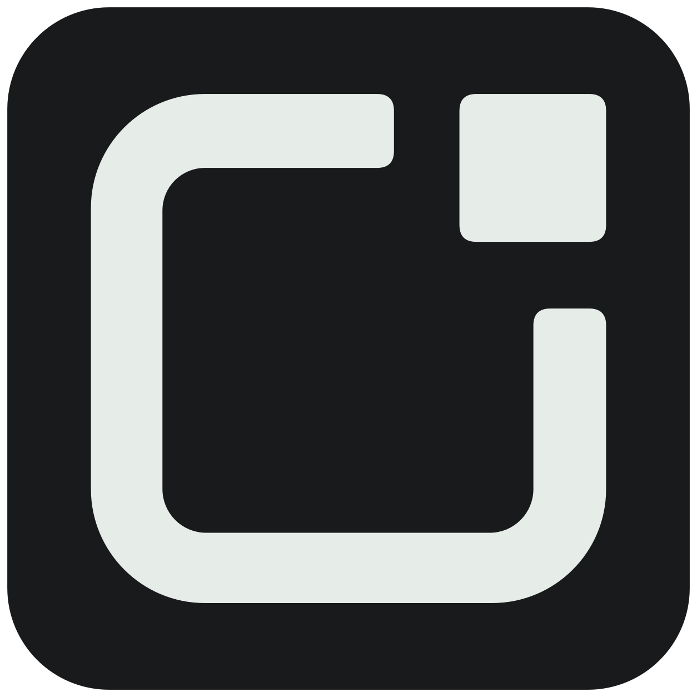
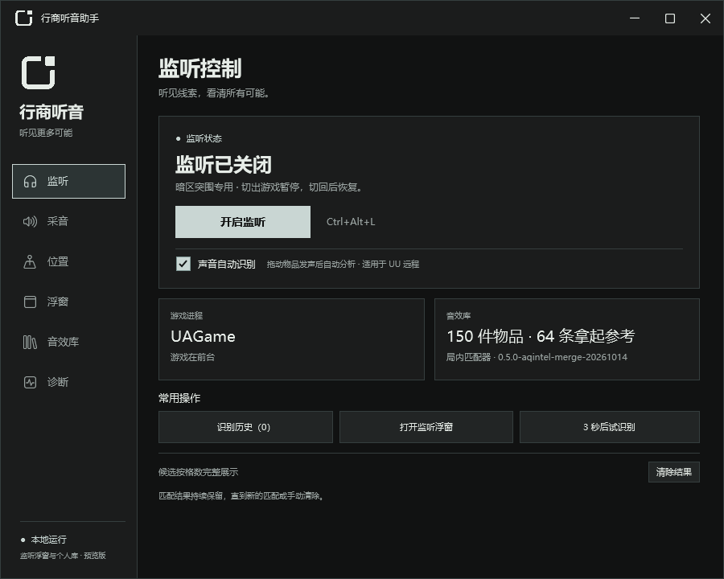
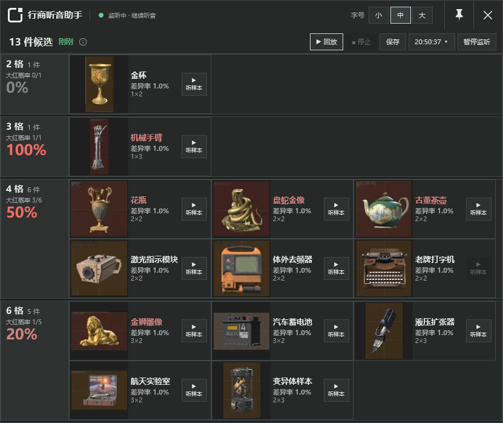

拾点 · 应用图标
透明浅色符号用于界面，深底版用于桌面、任务栏与托盘。各尺寸图标均从同一矢量轮廓生成。

界面标志

系统图标
实际 ICO 尺寸
16px
20px
24px
32px
40px
48px
64px
128px
16px
20px
24px
32px
40px
48px
64px
128px
主窗口 · 模拟界面检查

监听浮窗 · 模拟结果

透明浅色符号用于界面，深底版用于桌面、任务栏与托盘。各尺寸图标均从同一矢量轮廓生成。



